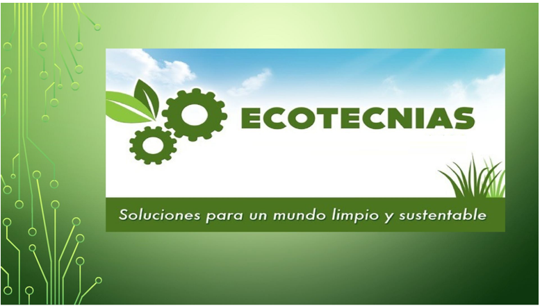

Ecotecnias de energia: aprovechan el sol, el viento o el biogas para generar energia limpia. Reducen la dependencia de combustibles fosiles.
Ecotecnias hidricas: enfocadas en el manejo responsable del agua, desde su captacion hasta su reutilizacion y purificacion.
Ecotecnias agricolas: promueven la produccion de alimentos sin danar el suelo ni contaminar el agua, usando tecnicas como la permacultura.
Ecotecnias habitacionales: aplican materiales y disenos sostenibles en la construccion de viviendas, reduciendo su huella ambiental.
Ecotecnias de residuos: transforman los desechos en recursos utiles, como el biogas, el abono o materiales de construccion reciclados.
Regresar